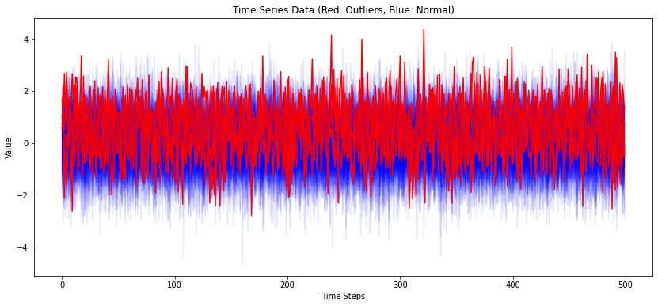

import numpy as np
import pandas as pd
from sklearn.model_selection import train_test_split
from sklearn.metrics import mean_squared_error
import matplotlib.pyplot as plt
from prophet import Prophet시계열 - 머신러닝 딥러닝 모델
Time Series - ML/DL Models
time series
deep learning
machine learning
시계열 분석을 정리하고자 한다. 머신러닝과 딥러닝을 이용한 시계열 분석에 대해 알아보자. 다만 각 모델에 대해서는 간단히 다룬다.
예측(Forecasting), 분류
Facebook Prophet
Prophet은 Facebook에서 개발한 시계열 예측을 위한 도구로, 특히 경제적, 금융적 시계열 데이터에서 강력한 성능을 발휘한다.
Prophet은 시계열 데이터를 세 가지 주요 구성 요소로 모델링한다.
트렌드(Trend): 데이터의 장기적인 증가 또는 감소 경향을 낸냅니다. Prophet은 비선형 트렌드를 감지하기 위해 변경점(change points)을 자동으로 선택한다.
계절성(Seasonality): 연간, 월간, 주간, 일간 등의 주기적인 패턴을 모델링합니다. Prophet은 Fourier series를 사용하여 이러한 계절성을 유연하게 캡처한다.
휴일(Holidays): 공휴일이나 특정 이벤트 같은 비정기적인 영향을 모델링할 수 있습니다. 사용자는 특정 휴일의 날짜를 모델에 직접 제공해야 한다.
df = pd.read_csv('https://raw.githubusercontent.com/facebook/prophet/main/examples/example_wp_log_peyton_manning.csv')
df['cap'] = 8.5
m = Prophet(growth='logistic')
m.fit(df)11:03:19 - cmdstanpy - INFO - Chain [1] start processing
11:03:20 - cmdstanpy - INFO - Chain [1] done processing<prophet.forecaster.Prophet at 0x1992aa56d60>future = m.make_future_dataframe(periods=1826)
future['cap'] = 8.5
fcst = m.predict(future)
fig = m.plot(fcst)# saturating minimum
df['y'] = 10 - df['y']
df['cap'] = 6
df['floor'] = 1.5
future['cap'] = 6
future['floor'] = 1.5
m = Prophet(growth='logistic')
m.fit(df)
fcst = m.predict(future)
fig = m.plot(fcst)11:03:53 - cmdstanpy - INFO - Chain [1] start processing
11:03:54 - cmdstanpy - INFO - Chain [1] done processingSVM, Ensemble(Bagging, Boosting)
Support Vector Machine


최대 마진 분류기: SVM의 주요 목표는 데이터 클래스 간에 최대 마진(margin)을 가지는 결정 경계(decision boundary)를 찾는 것이다. 마진은 결정 경계와 가장 가까운 훈련 샘플 사이의 거리를 의미하며, 이 샘플들을 서포트 벡터(support vectors)라고 한다.
- 목적 함수: \(\min_{w, b} \frac{1}{2} \|w\|^2\)
- 제약 조건: \(y_i (w \cdot x_i + b) \geq 1, \quad \forall i\)
커널 트릭: 선형으로 분리가 불가능한 데이터셋에 대해서 SVM은 커널 트릭(kernel trick)을 사용하여 특성 공간을 고차원으로 매핑한다(다항 커널, RBF(Radial Basis Function, 방사 기저 함수) 커널 등)
소프트 마진 분류: 일부 오분류를 허용하는 소프트 마진 분류 방법을 사용한다. 하이퍼파라미터 C를 사용하여 제어할 수 있으며, C가 크면 마진 오류를 더 적게 허용하고, C가 작으면 더 많은 마진 오류를 허용한다.
단점: scale에 민감
Bagging - Random Forest

앙상블 학습: 랜덤 포레스트는 여러 개의 결정 트리를 조합하여 사용합니다. 각 트리는 독립적으로 학습되며, 최종 예측은 트리들의 예측 결과를 평균내거나 가장 많이 선택된 클래스로 결정한다(분류의 경우).
부트스트랩 샘플링(Bootstrap sampling): 각 결정 트리는 전체 훈련 데이터셋에서 무작위로 선택된 데이터 샘플을 사용하여 훈련된다. 이 샘플링 방식을 부트스트랩 샘플링이라고 하며, 각 트리는 부트스트랩된 샘플로 구성된 서브셋을 이용해 훈련된다.
특성의 무작위 선택(Feature Randomness): 각 노드에서 최적의 분할을 결정할 때, 전체 특성이 아닌 무작위로 선택된 일부 특성만 고려한다. 이로 인해 트리 간의 상관관계가 감소하고, 모델의 다양성이 증가하여 과적합을 방지한다.
Boosting - Gradient Boosting

그래디언트 부스팅(Gradient Boosting)은 앙상블 학습 기법 중 하나로, 여러 개의 약한 학습기(weak learners)를 순차적으로 학습시켜 강력한 예측 모델을 만드는 방법이다. 이 방법은 주로 결정 트리를 약한 학습기로 사용하며, 각 단계에서 이전 학습기의 잔차(residual errors)를 줄이는 방향으로 학습을 진행한다.
손실 함수 최소화: 그래디언트 부스팅은 주어진 손실 함수를 최소화하기 위해 설계되었다.
초기화: 첫 번째 학습기를 통해 간단한 예측 모델(예: 평균, 중앙값 등)을 만든다. \(\rightarrow\) 반복 학습: 이후 각 단계에서 이전 모델의 잔차를 목표로 새로운 학습기를 훈련한다. \(\rightarrow\) 모델 업데이트: 각 학습기의 결과를 가중합하여 최종 모델을 업데이트합니다. 각 단계의 학습기는 이전 모델의 그래디언트를 사용하여 학습된다.
학습률(Learning Rate): 각 학습기의 기여도를 조절하는 학습률을 도입하여 모델의 변동성을 감소시키고, 더 안정적인 학습을 유도한다.
단점: 과적합에 약함
XGBoost
- 성능과 속도: XGBoost는 병렬 처리와 트리 가지치기(Tree Pruning)를 통해 고속으로 실행되며, 전통적인 그래디언트 부스팅 기법보다 빠르며, 큰 데이터셋에서도 빠르게 학습할 수 있다.
- 정규화: XGBoost는 모델 복잡성에 대한 정규화 항목을 포함하여 과적합을 방지한다.
- 가지치기: XGBoost는 깊이 우선 접근 방식을 사용하여 트리를 확장하고, 손실 기능이 개선되지 않으면 트리 성장을 조기에 중단한다. 이는 과적합을 줄인다.
- 결측치 처리: XGBoost는 내부적으로 결측치를 처리할 수 있는 기능을 가지고 있다. 사용자가 각 특성의 결측치를 어떻게 처리할지 지정할 수 있으며, 자동으로 최적의 방향을 찾는다.
- 사용자 정의 가능성: 사용자는 손실 함수를 자유롭게 정의할 수 있으며, 이를 최적화하는 방향으로 알고리즘을 조정할 수 있다. 이는 XGBoost를 다양한 문제에 맞춰 유연하게 사용할 수 있게 한다.
from sklearn.preprocessing import StandardScaler
from sklearn.svm import SVC
from sklearn.ensemble import RandomForestClassifier
from sklearn.metrics import accuracy_score, f1_score, confusion_matrix
import xgboost as xgb
tn = 10000
dates = pd.date_range('20200101', periods=tn)
data = pd.DataFrame(np.random.randn(tn, 5), index=dates)
# y 생성
noise = np.random.normal(0, 0.5, tn)
data['y'] = ((2 * data[0]/data[1] - 1.5 * data[2]**2 + noise) > 0).astype(int)
# 데이터 분할
X = data.drop('y', axis=1)
y = data['y']
X_train, X_test, y_train, y_test = train_test_split(X, y, test_size=0.2, shuffle=False)
scaler = StandardScaler()
X_train_scaled = scaler.fit_transform(X_train)
X_test_scaled = scaler.transform(X_test)
# 모델 학습 및 평가
def train_evaluate(model, X_train, y_train, X_test, y_test):
model.fit(X_train, y_train)
predictions = model.predict(X_test)
# 성능 지표 계산
accuracy = accuracy_score(y_test, predictions)
f1 = f1_score(y_test, predictions)
conf_matrix = confusion_matrix(y_test, predictions)
# 결과 출력
print(f'Accuracy of {model.__class__.__name__}: {accuracy:.2f}')
print(f'F1 Score of {model.__class__.__name__}: {f1:.2f}')
print(f'Confusion Matrix of {model.__class__.__name__}:\n{conf_matrix}\n')
print('')
# SVC
svc_model = SVC()
train_evaluate(svc_model, X_train_scaled, y_train, X_test_scaled, y_test)
# Random Forest
rf_model = RandomForestClassifier(random_state=42)
train_evaluate(rf_model, X_train, y_train, X_test, y_test)
# XGBoost
xgb_model = xgb.XGBClassifier(use_label_encoder=False, eval_metric='logloss')
train_evaluate(xgb_model, X_train, y_train, X_test, y_test)Accuracy of SVC: 0.90
F1 Score of SVC: 0.85
Confusion Matrix of SVC:
[[1232 78]
[ 124 566]]
Accuracy of RandomForestClassifier: 0.94
F1 Score of RandomForestClassifier: 0.92
Confusion Matrix of RandomForestClassifier:
[[1251 59]
[ 55 635]]
Accuracy of XGBClassifier: 0.94
F1 Score of XGBClassifier: 0.91
Confusion Matrix of XGBClassifier:
[[1235 75]
[ 45 645]]
RNN, LSTM, GRU
RNN(Recurrent Neural Network)과 그 변형들인 LSTM(Long Short-Term Memory)과 GRU(Gated Recurrent Unit)는 순차 데이터나 시계열 데이터를 처리하는 데 특화된 신경망 구조이다.
RNN (Recurrent Neural Network)

RNN은 순차적인 정보를 처리하기 위해 고안된 신경망으로, 내부에 반복되는 네트워크 구조를 가진다. 이 구조는 시퀀스의 각 요소를 차례대로 처리하며, 각 시점에서의 출력이 다음 시점의 입력에 영향을 미친다.
메모리: 이전 정보를 일정 기간 동안 기억할 수 있는 ‘메모리’ 기능을 가지고 있어, 시간에 따른 데이터의 패턴을 학습할 수 있다.
파라미터 공유: 시간에 따라 동일한 가중치를 사용함으로써 학습해야 할 파라미터 수를 줄이고, 공간적 효율성을 높인다.
단기 기억 문제: 긴 시퀀스를 처리할 때 초기 입력 정보가 망각되는 경향이 있다(장기 의존성 문제).
그래디언트 소실 및 폭발: 시간이 길어질수록 그래디언트가 소실되거나 폭발할 수 있는 문제가 발생한다.
LSTM (Long Short-Term Memory)

LSTM은 RNN의 장기 의존성 문제를 해결하기 위해 고안된 구조로, 정보를 장기간에 걸쳐 저장하거나 삭제할 수 있는 게이트가 포함되어 있다.
구조
- 입력 게이트: 정보를 셀 상태에 추가할지 말지 결정
- 망각 게이트: 셀 상태에서 어떤 정보를 버릴지 결정
- 출력 게이트: 셀 상태의 어떤 부분을 출력할지 결정
장기 기억: 중요한 정보를 긴 시간 동안 기억할 수 있다.
그래디언트 안정성: 게이트를 통해 그래디언트의 소실과 폭발 문제를 크게 완화한다.
GRU (Gated Recurrent Unit)

GRU는 LSTM의 간소화된 버전으로, 성능은 유지하면서 계산을 더 효율적으로 만들고자 설계되었다.
- 구조
- 리셋 게이트: 과거 정보를 얼마나 무시할지 결정
- 업데이트 게이트: 새로운 정보를 얼마나 많이 받아들일지, 과거 정보를 얼마나 유지할지 결정
- 계산 효율성: LSTM에 비해 더 적은 계산을 요구하며, 비교적 적은 양의 데이터로도 좋은 성능을 발휘할 수 있다.
import tensorflow as tfimport numpy as np
import pandas as pd
from sklearn.preprocessing import StandardScaler
from tensorflow.keras.models import Sequential
from tensorflow.keras.layers import SimpleRNN, LSTM, GRU, Dense
from tensorflow.keras.optimizers import Adam
X_train_scaled = scaler.fit_transform(X_train).reshape(-1, 1, 5)
X_test_scaled = scaler.transform(X_test).reshape(-1, 1, 5)
# 모델 정의 함수
def build_model(model_type):
model = Sequential()
if model_type == 'RNN':
model.add(SimpleRNN(50, input_shape=(1, 5), activation='tanh'))
elif model_type == 'LSTM':
model.add(LSTM(50, input_shape=(1, 5), activation='tanh'))
elif model_type == 'GRU':
model.add(GRU(50, input_shape=(1, 5), activation='tanh'))
model.add(Dense(1, activation='sigmoid'))
model.compile(optimizer=Adam(learning_rate=0.01), loss='binary_crossentropy', metrics=['accuracy'])
return model
# 모델 학습 및 평가
def train_evaluate(model_type):
model = build_model(model_type)
model.fit(X_train_scaled, y_train, epochs=30, verbose=0)
loss, accuracy = model.evaluate(X_test_scaled, y_test, verbose=0)
print(f'{model_type} Model Accuracy: {accuracy:.2f}')
train_evaluate('RNN')
train_evaluate('LSTM')
train_evaluate('GRU')RNN Model Accuracy: 0.93
LSTM Model Accuracy: 0.94
GRU Model Accuracy: 0.94Transformer
트랜스포머(Transformer)는 주로 자연어 처리(NLP) 분야에서 사용되는 신경망 아키텍처로, 2017년 구글의 “Attention is All You Need” 논문을 통해 소개되었다. 트랜스포머는 어텐션 메커니즘을 사용하여 전체 입력 데이터를 한 번에 처리하는 방식을 채택한다.

- 어텐션 메커니즘
- 셀프 어텐션(Self-Attention): 하나의 시퀀스 내에서 각 요소가 서로 얼마나 영향을 미치는지를 학습한다. 각 단어는 다른 모든 단어와의 관계를 통해 자신의 출력을 조정한다.
- 멀티 헤드 어텐션(Multi-Head Attention): 셀프 어텐션을 다양한 방식으로 동시에 수행하여, 서로 다른 시각에서 정보를 추출하고 결합한다. 이는 모델이 다양한 표현을 학습할 수 있도록 돕는다.
- 포지셔널 인코딩(Positional Encoding)
- 트랜스포머는 입력 데이터의 시퀀스 순서에 대한 정보가 없기 때문에, 각 입력 요소에 포지셔널 인코딩을 추가하여 위치 정보를 제공한다.
- 인코더 디코더 구조
- 인코더: 입력 시퀀스를 처리하여 연속적인 표현을 생성한다. 트랜스포머는 이러한 인코더를 여러 층으로 쌓아 구성한다.
- 디코더: 인코더의 출력과 이전 디코더의 출력을 받아 다음 출력 시퀀스 요소를 생성한다. 디코더 역시 멀티 헤드 어텐션과 피드포워드 신경망으로 구성된다.
- 장점
- 병렬 처리: RNN과 달리 트랜스포머는 입력 데이터를 한 번에 처리할 수 있어 GPU를 활용한 대규모 병렬 처리가 가능하다.
- 장거리 의존성 학습: 셀프 어텐션 메커니즘 덕분에, 문장 내 먼 거리에 위치한 요소 간의 관계도 효과적으로 학습할 수 있다.
from tensorflow.keras.models import Model
from tensorflow.keras.layers import Input, MultiHeadAttention, LayerNormalization, Dropout, Flatten
X_train_scaled = scaler.fit_transform(X_train).reshape(-1, 10, 5) # 10 타임스텝, 5 피처
X_test_scaled = scaler.transform(X_test).reshape(-1, 10, 5)
# Transformer 레이어 구성
def transformer_encoder(inputs):
# Multi-head attention
attn_output = MultiHeadAttention(num_heads=2, key_dim=5)(inputs, inputs)
attn_output = Dropout(0.1)(attn_output)
out1 = LayerNormalization(epsilon=1e-6)(inputs + attn_output)
# Feed-forward network
ffn_output = Dense(20, activation="relu")(out1)
ffn_output = Dense(inputs.shape[-1])(ffn_output)
ffn_output = Dropout(0.1)(ffn_output)
return LayerNormalization(epsilon=1e-6)(out1 + ffn_output)
# 모델 정의
input_layer = Input(shape=(10, 5))
x = transformer_encoder(input_layer)
x = transformer_encoder(x)
x = Flatten()(x)
output_layer = Dense(1, activation='sigmoid')(x)
model = Model(inputs=input_layer, outputs=output_layer)
model.compile(optimizer=Adam(learning_rate=0.01), loss='binary_crossentropy', metrics=['accuracy'])
# 모델 학습
y_train_adjusted = y_train[::10]
y_test_adjusted = y_test[::10]
model.fit(X_train_scaled, y_train_adjusted, epochs=100, verbose=0)
loss, accuracy = model.evaluate(X_test_scaled, y_test_adjusted, verbose=0)
print(f'Transformer Model Accuracy: {accuracy:.2f}')Transformer Model Accuracy: 0.83이상탐지(Anomaly Detection)
Autoencoders
Autoencoder는 입력 데이터를 효과적으로 압축하고 재구성하는 신경망 아키텍처로, 비지도 학습에 주로 사용된다. 이 모델은 입력 데이터를 낮은 차원의 표현으로 압축하는 인코더 부분과, 이 압축된 표현을 다시 원래의 데이터로 재구성하는 디코더 부분으로 구성된다.
Autoencoder의 기본 구조
인코더(Encoder): 입력 데이터 \(x\)를 받아들여, 그 데이터의 특징을 포착하는 내부 표현 \(z\)를 생성한다. 이 과정에서 원본 데이터보다 낮은 차원의 공간으로 데이터를 압축한다.
디코더(Decoder): 인코더에서 생성된 내부 표현 \(z\)를 사용하여 원본 데이터와 같은 차원의 출력\(x'\)를 재구성한다. 디코더의 목표는 인코더에서 압축된 정보를 사용해 원본 데이터 \(x\)를 가능한 한 정확하게 복원하는 것이다.
손실 함수(Loss function): 재구성된 데이터\(x'\)와 원본 데이터 \(x\) 사이의 차이를 측정한다. 일반적으로 사용되는 손실 함수는 Mean Squared Error (MSE)이다.
Autoencoder의 활용 - 이상 탐지(Anomaly Detection): 정상 데이터만을 사용해 Autoencoder를 훈련시키면, 훈련되지 않은 이상 데이터는 재구성 오류가 크게 나타나므로 이상치를 감지하는 데 사용할 수 있다.
재구성 오류는 일반적으로 입력 데이터 \(x\)와 재구성된 데이터 \(x'\) 사이의 거리로 계산된다. 이 거리는 보통 평균 제곱 오차(Mean Squared Error, MSE)로 계산된다.
Autoencoder를 훈련할 때 사용한 정상 데이터 샘플을 기반으로 재구성 오류를 계산하면, 대부분의 정상 샘플은 낮은 재구성 오류를 보일 것이며, 이상 데이터 또는 훈련 샘플에 포함되지 않은 데이터를 사용하여 재구성 오류를 계산하면, 이들은 보통 더 높은 재구성 오류를 가지게 된다.
재구성 오류의 분포를 분석한 후, 이상치를 식별하기 위한 임계값을 설정한다: \(Threshold = Mean(errors) + K \times Std(errors)\), 여기서 \(k\)는 경험적으로 결정되며 보통 2.5~3을 사용.
from tensorflow.keras.models import Model
from tensorflow.keras.layers import Input, LSTM, RepeatVector, TimeDistributed, Dense
from tensorflow.keras.optimizers import Adam
from sklearn.preprocessing import MinMaxScaler
from sklearn.metrics import mean_squared_error
# 데이터 로드 및 전처리 함수
def load_data():
# 이 예제에서는 임의의 시계열 데이터를 생성합니다
np.random.seed(0)
normal_data = np.random.normal(size=(100, 500, 1)) # 정상 데이터
anomaly_data = np.random.normal(loc=.5, size=(10, 500, 1)) # 이상 데이터 (10개)
return normal_data, anomaly_data
# Autoencoder 모델을 구축하는 함수
def build_autoencoder(timesteps, encoding_dim=64):
input_seq = Input(shape=(timesteps, 1))
# 인코더 부분: LSTM을 사용하여 시계열 데이터를 encoding_dim 차원으로 인코딩
encoded = LSTM(encoding_dim*2, activation='relu', return_sequences=True)(input_seq)
encoded = LSTM(encoding_dim, activation='relu', return_sequences=False)(encoded)
# 디코더 부분: 인코딩된 상태를 다시 원래 시계열 길이로 복원
decoded = RepeatVector(timesteps)(encoded)
decoded = LSTM(encoding_dim, activation='relu', return_sequences=True)(decoded)
decoded = LSTM(encoding_dim*2, activation='relu', return_sequences=True)(decoded)
decoded = TimeDistributed(Dense(1))(decoded)
# 모델 정의 (입력과 출력 연결)
autoencoder = Model(input_seq, decoded)
autoencoder.compile(optimizer=Adam(learning_rate=0.001), loss='mse')
return autoencoder# 데이터를 로드합니다
normal_data, anomaly_data = load_data()
# 모델을 구축합니다
encoding_dim = 32 # 임의의 인코딩 차원 크기
autoencoder = build_autoencoder(normal_data.shape[1], encoding_dim)
autoencoder.summary()Model: "model_8"
_________________________________________________________________
Layer (type) Output Shape Param #
=================================================================
input_9 (InputLayer) [(None, 500, 1)] 0
lstm_22 (LSTM) (None, 500, 64) 16896
lstm_23 (LSTM) (None, 32) 12416
repeat_vector_6 (RepeatVec (None, 500, 32) 0
tor)
lstm_24 (LSTM) (None, 500, 32) 8320
lstm_25 (LSTM) (None, 500, 64) 24832
time_distributed_5 (TimeDi (None, 500, 1) 65
stributed)
=================================================================
Total params: 62529 (244.25 KB)
Trainable params: 62529 (244.25 KB)
Non-trainable params: 0 (0.00 Byte)
_________________________________________________________________# 정상 데이터만 사용하여 모델을 훈련합니다
autoencoder.fit(normal_data, normal_data, epochs=50, batch_size=64, validation_split=0.2, verbose=0)
# 모든 데이터(정상 + 이상)에 대해 재구성 오류를 계산합니다
test_data = np.concatenate([normal_data, anomaly_data])
reconstructed = autoencoder.predict(test_data)
mse = np.mean(np.power(test_data - reconstructed, 2), axis=1)
# 오류 기반으로 이상치 감지
threshold = np.mean(mse) + 2 * np.std(mse) # 임계값 설정
print("MSE Threshold: ", threshold)
outliers = mse > threshold
# 이상치를 플롯으로 표시
plt.figure(figsize=(14, 6))
plt.hist(mse, bins=50)
plt.axvline(threshold, color='r', linestyle='dashed', linewidth=2)
plt.title('Histogram of Reconstruction Errors')
plt.xlabel('Reconstruction error')
plt.ylabel('Frequency')
plt.show()
# 이상치 표시
print("Detected outliers: ", np.sum(outliers))4/4 [==============================] - 1s 238ms/step
MSE Threshold: 1.1976556399636464
Detected outliers: 5plt.figure(figsize=(14, 6))
for i, (data, is_outlier) in enumerate(zip(test_data, outliers)):
plt.plot(data.flatten(), color='blue' if not is_outlier else 'red', alpha=0.1 if not is_outlier else 1.0)
plt.title('Time Series Data (Red: Outliers, Blue: Normal)')
plt.xlabel('Time Steps')
plt.ylabel('Value')
plt.show()
#VAE(Variational AE)
from keras.models import Model
from keras.layers import Input, LSTM, Dense, Lambda, RepeatVector
from keras import backend as K
from keras.losses import mean_squared_error
from keras.optimizers import Adam
# VAE의 샘플링 함수
def sampling(args):
z_mean, z_log_var = args
batch = K.shape(z_mean)[0]
dim = K.int_shape(z_mean)[1]
epsilon = K.random_normal(shape=(batch, dim))
return z_mean + K.exp(0.5 * z_log_var) * epsilon
# VAE 모델 구축 함수
def build_vae(timesteps, features, latent_dim):
# 인코더
inputs = Input(shape=(timesteps, features))
encoded = LSTM(32)(inputs)
z_mean = Dense(latent_dim)(encoded)
z_log_var = Dense(latent_dim)(encoded)
z = Lambda(sampling, output_shape=(latent_dim,))([z_mean, z_log_var])
# 디코더
decoder_h = LSTM(32, return_sequences=True)
decoder_mean = Dense(features, activation='linear')
h_decoded = RepeatVector(timesteps)(z)
x_decoded_mean = decoder_h(h_decoded)
x_decoded_mean = decoder_mean(x_decoded_mean)
# 모델 정의
vae = Model(inputs, x_decoded_mean)
vae_loss = mean_squared_error(K.flatten(inputs), K.flatten(x_decoded_mean)) * timesteps
kl_loss = -0.5 * K.sum(1 + z_log_var - K.square(z_mean) - K.exp(z_log_var), axis=-1)
vae.add_loss(K.mean(vae_loss + kl_loss))
vae.compile(optimizer=Adam())
return vae
# 데이터 생성 함수
def generate_data(num_samples):
# 이 예제에서는 사인파와 코사인파의 조합으로 데이터를 생성합니다.
timesteps = 500 # 각 시계열의 길이
x = np.empty((num_samples, timesteps, 1))
for i in range(num_samples):
for t in range(timesteps):
x[i, t, 0] = np.sin(0.1 * t) + np.cos(0.05 * t) + np.random.normal(0, 0.1)
return x
# 데이터 로드
x_train = generate_data(100)
x_test = generate_data(20)
# 이상치 데이터 생성
x_anomaly = generate_data(10)
x_anomaly[:, :25, :] += .5 # 첫 반을 더 높은 값으로 변경하여 이상치 생성
# 모델 구축 및 훈련
vae = build_vae(timesteps=500, features=1, latent_dim=10)
vae.fit(x_train, epochs=50, batch_size=32, validation_data=(x_test, None), verbose=0)
# 테스트 데이터와 이상치 데이터에 대한 재구성 오류 계산
x_test_encoded = vae.predict(x_test)
x_anomaly_encoded = vae.predict(x_anomaly)
mse_test = np.mean(np.power(x_test - x_test_encoded, 2), axis=(1, 2))
mse_anomaly = np.mean(np.power(x_anomaly - x_anomaly_encoded, 2), axis=(1, 2))
# 오류 기반으로 이상치 감지
threshold = np.mean(mse_test) + 2 * np.std(mse_test)
print("MSE Threshold: ", threshold)
outliers = mse_anomaly > threshold
# 결과 시각화
plt.figure(figsize=(10, 6))
plt.hist(mse_test, bins=50, alpha=0.75, label='Normal')
plt.hist(mse_anomaly, bins=50, alpha=0.75, label='Anomaly')
plt.axvline(threshold, color='r', linestyle='dashed', linewidth=2)
plt.title('Histogram of Reconstruction Errors')
plt.legend()
plt.show()
# 이상치 수 출력
print("Number of anomalies detected:", np.sum(outliers))1/1 [==============================] - 1s 703ms/step
1/1 [==============================] - 0s 88ms/step
MSE Threshold: 1.0092991314633937
Number of anomalies detected: 10딥러닝을 이용한 시계열의 이상치 감지 방법으로는 AE 외에도 다양한 기법이 있다. 이에 대해서는 따로 포스트를 만들어 업로드하도록 하겠다.